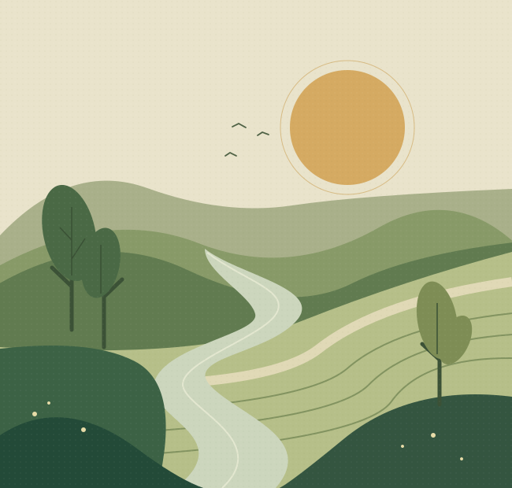

SELF-PACED · 5 MIN
Start with climate basics
One short lesson. A clearer picture.
FOR THE PLANET. FOR ALL OF US.
Make sense of our changing world. Discover reliable resources and everyday ways to live a little lighter.
Explore the library
THE KNOWLEDGE TO MAKE A DIFFERENCE
Big questions, clear explanations.
Find something that sparks your curiosity.
6 resources to explore
No resources found. Try a broader search or a different topic.
Thoughtfully written learning notes, with links to scientific sources. Our approach
FROM KNOWING TO DOING
Explore how a different travel habit could change your commute’s emissions. Start small, stay curious.
A learning scenario, not a personal carbon footprint.GOOD THINGS GROW TOGETHER
Learn a little. Get your hands in the soil.
Make room for a different kind of connection.
CHANGE BEGINS CLOSE TO HOME
Choose a pin to explore a sample initiative and learn how to find a real one near you.
Explore your area with OpenStreetMap ↗ROOTED IN CURIOSITY. GROUNDED IN SCIENCE.
We turn complex environmental ideas into approachable first steps. Our original learning notes point back to established sources, make assumptions visible, and leave room for questions.
Choose a topic that connects to your day. Read a lesson, check its source, then try the short knowledge check. Your saved resources and lesson progress stay in this browser.
No. Resources are editorial learning notes. The commute calculator uses stated illustrative factors. The map is fictional. Nothing here measures your actual footprint or collective impact.
This static homepage has no account, forum, submissions, notifications, or partner services. You can save learning resources locally and download a practical checklist without signing up.